Sagesse
Écouter avant de décider, préserver les savoirs et laisser l’expérience guider le pouvoir.

Souveraineté d’Asharun · Asharien(ne)
Présentation et organisation
Avant que les sables ne reprennent leurs droits, Asharun était un royaume prospère entre désert brûlant et vallées fertiles. Né de tribus nomades réunies sous une bannière sacrée, il était devenu une puissance régionale fondée sur le commerce, la foi et la connaissance.
Ses palais, ses marchés et ses cités d’oasis incarnaient un monde où l’échange comptait autant que la force. Les dirigeants s’appuyaient sur les traditions spirituelles, les érudits et les stratèges pour préserver l’équilibre entre tribus, richesses et territoires.
Derrière cette splendeur se trouvait une organisation exigeante. Les routes commerciales, la diplomatie et l’hospitalité assuraient la prospérité ; la discipline et le respect des lois sacrées garantissaient l’unité d’un royaume toujours exposé aux caprices du désert.

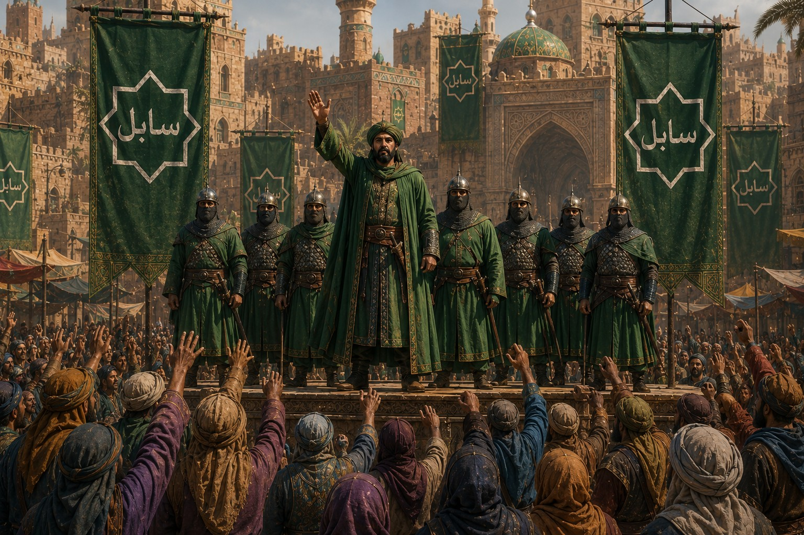
Un territoire indompté
Au nord, des plateaux rocheux subissaient des vents violents. Au sud s’étendait la Mer de Silence, un désert profond où seuls les initiés savaient voyager. Les villes entouraient des sources précieuses et leurs remparts protégeaient marchés, greniers et caravanes.
Les régions périphériques échappaient parfois au contrôle direct de l’Émir. Tributs, alliances et rébellions y redessinaient sans cesse l’autorité. Cette géographie forgea un peuple résilient, discipliné et profondément attaché à l’honneur.
Écouter avant de décider, préserver les savoirs et laisser l’expérience guider le pouvoir.
Offrir l’eau, le toit et la protection au voyageur, car nul ne traverse seul la Mer de Silence.
Endurer la chaleur, la perte et l’incertitude sans abandonner la route ni ses serments.
Foi, pouvoir et équilibre
La monarchie était absolue, mais jamais solitaire. Autour de l’Émir, le Majlis, les Sharif, les Qadis et les chefs militaires maintenaient l’équilibre fragile entre l’autorité centrale et l’autonomie des tribus.
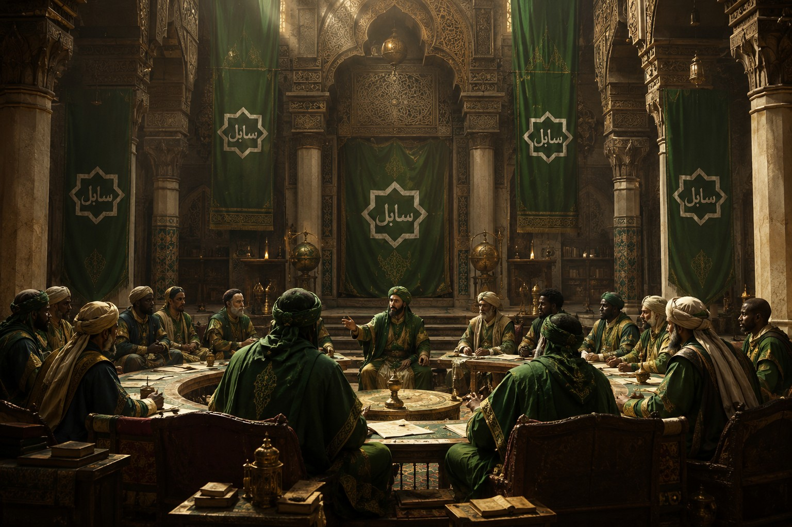
L’Émir détient le pouvoir suprême, nomme les gouverneurs, conduit la diplomatie et décide de la guerre. Son autorité absolue repose néanmoins sur sa capacité à maintenir l’équilibre entre tribus, cités, foi et commerce.
Chefs tribaux, grands vizirs, érudits, marchands, conseillers religieux et stratèges y débattent des lois et des grandes réformes. Consultatif en théorie, il peut orienter directement le gouvernement en période de crise.
Les Sharif administrent oasis, cités et territoires au nom de l’Émir. Ils disposent d’une large autonomie locale, mais doivent garantir la sécurité des routes, la collecte des impôts et la fidélité des grandes familles.
Les Cavaliers du Désert conduisent raids et reconnaissances, l’Infanterie des Forteresses protège les villes et les passages stratégiques, tandis que la Garde Royale ne répond qu’au souverain.
Ces juges associent loi religieuse, précédents juridiques et coutumes tribales. Leur mission est de restaurer l’équilibre et de prévenir la vengeance, sans renoncer aux sanctions sévères lorsque l’ordre du royaume est menacé.
Hiérarchie sociale
Souverain absolu et garant de l’unité des tribus, des lois sacrées et des routes du désert.
Chef suprême des armées et responsable de la défense de la Souveraineté.
Noble et gouverneur de province, souvent issu d’une grande famille locale.
Savant, juriste ou érudit chargé d’interpréter les textes et de transmettre le savoir.
Marchand et acteur essentiel des caravanes, des marchés et de la diplomatie économique.
Artisan, cultivateur, nomade ou citadin : le peuple qui fait vivre les oasis et les cités.
Rangs militaires
Commandant chargé de conduire les campagnes et de coordonner les grandes forces tribales.
Officier responsable des unités, de la discipline et de l’exécution des manœuvres.
Cavalier d’élite reconnu pour sa bravoure, sa mobilité et sa maîtrise du désert.
Soldat formant le cœur de l’infanterie, des garnisons et des défenses urbaines.
Textes sacrésFondement spirituel et moral des décisions rendues par les Qadis.
PrécédentsLes jugements anciens servent de repères pour préserver la cohérence du droit.
Traditions localesLes coutumes tribales sont prises en compte lorsqu’elles ne menacent pas l’unité du royaume.
RéparationLa médiation et la compensation sont privilégiées pour éviter les cycles de vengeance.
Une institution controversée
La servitude jouait un rôle économique, domestique, administratif et militaire sans dominer toute la société. Encadrée par la loi et la religion, elle demeurait profondément inégalitaire et les abus contribuèrent aux fragilités internes du royaume.
La servitude provient principalement de la guerre, des dettes ou de la naissance. Elle est reconnue par la loi et encadrée par les autorités religieuses et judiciaires.
Domestiques, travailleurs, militaires et agents administratifs ne connaissent pas la même condition. Certains esclaves éduqués ou soldats peuvent acquérir influence et prestige.
Les maîtres doivent assurer nourriture et protection. Des plaintes peuvent être entendues par les Qadis, même si les abus et les inégalités demeurent réels.
Le rachat, le mérite ou la décision du maître peuvent rendre la liberté. Les affranchis deviennent des protégés intégrés à la société, quoique souvent encore marginalisés.
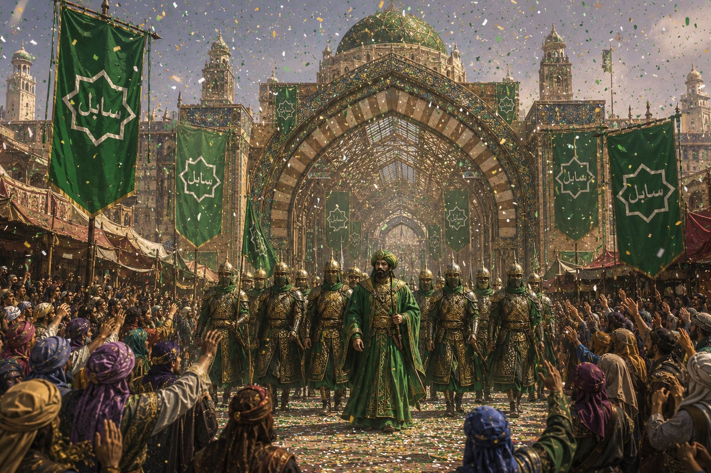
L’âge d’or avant la chute
Expansion, commerce caravanier, poésie, architecture et sciences du désert firent de Zarqad, Ibn-Sahra et Nurazan des centres de richesse et de savoir. Mais la dépendance aux routes, les luttes de pouvoir et les changements du climat rendaient cette prospérité plus fragile qu’elle ne le paraissait.
Histoire et fondation
Quatre livres suivent l’ascension des tribus, le rayonnement des routes, les secrets ensevelis et la dernière nuit de Nurazan. Chaque archive peut être ouverte indépendamment sans briser la grande chronologie.
Des tribus nomades à une souveraineté durable : Asharun apprend à unir le désert sans renier ceux qui le parcourent.
Avant Asharun, les territoires compris entre l’Aqmar et le Rub’ al-Hazim appartenaient à une multitude de tribus nomades. Chacune gardait ses points d’eau, ses itinéraires et ses rivalités, sans qu’aucun pouvoir puisse garantir durablement la sécurité du désert.
Profitant d’une époque de sécheresse et d’insécurité, Eshan ibn Malik, chef des Banu Rih, réunit les grandes tribus à l’oasis de Qasr al-Nour. Le Pacte des Sept Étendards leur donna une autorité commune pour défendre les caravanes, arbitrer les conflits et protéger les points d’eau.
Proclamé Premier Émir des Tribus, Eshan fonda un royaume qui ne reposait pas encore sur des murailles, mais sur la fidélité des clans et la maîtrise des routes. Le désert devint bientôt le trait d’union commercial entre le nord et le sud.
La mort d’Eshan fit craindre l’éclatement de l’alliance. Khalid al-Arani répondit à cette menace en créant le Majlis des Sables, où les représentants des grandes tribus pouvaient défendre leurs intérêts sans reprendre les armes.
Des puits fortifiés, des relais caravaniers et une armée permanente financée par le commerce du sel, des épices et des chevaux consolidèrent le royaume. Les poètes et chroniqueurs forgèrent peu à peu l’idée d’un destin commun à tous les peuples des dunes.

Longtemps, les souverains gouvernèrent depuis des campements itinérants. L’essor du commerce poussa l’Émir Harun al-Rada à choisir l’oasis de Jannat al-Rimal, au carrefour des grandes routes, pour y établir une capitale.
Artisans et travailleurs de toutes les tribus bâtirent Nurazan autour de vastes places, de marchés et du Palais des Dunes Éternelles. La ville devint le siège de l’Émir, du Majlis et de l’administration, sans effacer la mémoire nomade du royaume.
Kharzad tenta de s’emparer des routes commerciales peu après la fondation de la capitale. Malik ibn Harun rassembla les tribus et refusa une bataille frontale qui aurait favorisé l’envahisseur.
Raids de cavalerie, embuscades et attaques contre les convois épuisèrent l’armée ennemie. À Wadi al-Ahmar, les forces ashariennes remportèrent la victoire et imposèrent la reconnaissance officielle de leur souveraineté sur le désert.
Pendant sept jours et sept nuits, le sable obscurcit le ciel. Des oasis furent ensevelies, les caravanes immobilisées et les communications interrompues.
La solidarité entre clans permit au royaume de tenir. Lorsque les vents cessèrent, les anciennes pistes avaient disparu et de nouvelles dunes remodelaient le territoire. L’épreuve devint un récit fondateur de la résilience asharienne.
La Souveraineté relia ses oasis, ses cités et ses comptoirs par une voie protégée. Puits, relais, entrepôts et postes de garde rendirent les traversées plus rapides et plus sûres.
Autour de cette route, plusieurs oasis devinrent des centres d’échange majeurs. L’ouvrage symbolisa autant l’unité politique d’Asharun que la prospérité gagnée par le commerce.
Une armée étrangère pénétra en Asharun pour prendre ses richesses. Les guerriers l’attendirent dans un passage étroit entre falaises et dunes, puis harcelèrent ses colonnes sous la chaleur et les tempêtes.
Désorienté et privé de ravitaillement, l’envahisseur fut contraint au repli. Cette victoire consacra la réputation des Ashariens comme maîtres d’un territoire que les étrangers croyaient vide.
Au sommet de sa puissance, Asharun étend son influence par les caravanes, les traités et une maîtrise redoutable des guerres d’usure.
Malgré la distance et leurs différences, Asharun et Shintai découvrirent un même attachement à l’honneur, à la discipline et aux traditions. Un traité ouvrit de nouvelles voies commerciales entre l’Orient et les terres désertiques.
Épices, soieries, métaux, artisanat et savoirs circulèrent entre les deux cours. Cette alliance fut l’un des premiers grands succès diplomatiques de la Souveraineté.
L’attaque de navires marchands ashariens et le soutien supposé de Nerethis à des groupes hostiles déclenchèrent une escalade. Inspections, taxes et démonstrations navales menèrent les deux puissances au seuil de la guerre.
Sous la pression des marchands et grâce à des médiateurs neutres, un accord protégea finalement les routes maritimes et limita l’action des capitaines pirates. La méfiance, elle, ne disparut jamais.
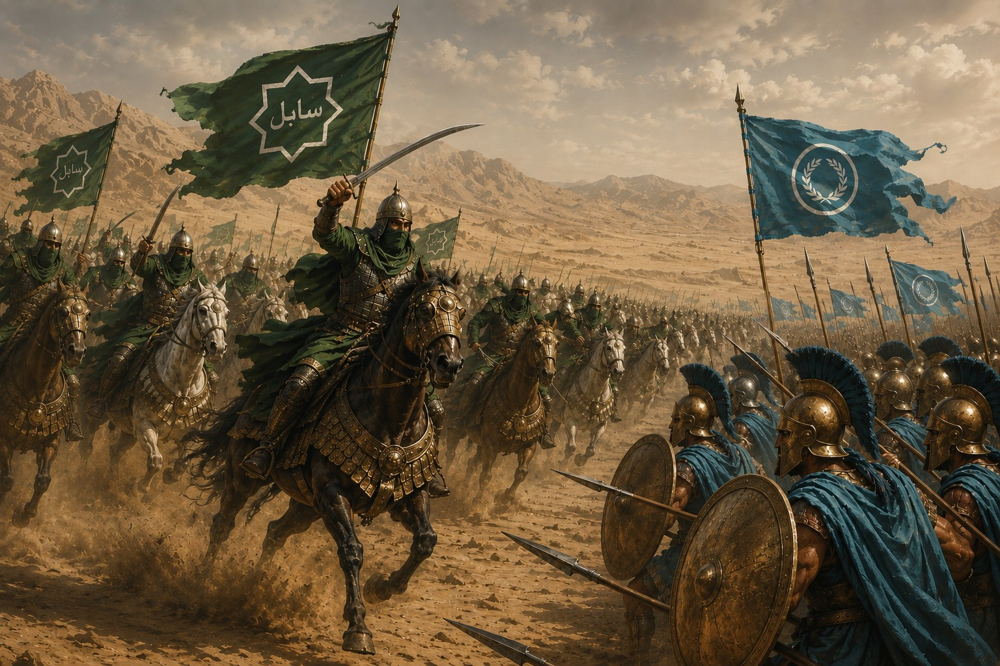
Erythros voulut étendre son influence sur des ports essentiels au commerce asharien. Après l’échec des négociations, ses hoplites avancèrent dans le désert, persuadés d’obtenir une victoire rapide.
Les cavaliers d’Asharun coupèrent les lignes de ravitaillement, protégèrent les puits et usèrent l’armée adverse. Dans la plaine d’Al-Zahir, une vaste manœuvre de contournement brisa les formations erythroyennes.
La paix reconnut les droits commerciaux d’Asharun tout en rétablissant des échanges nécessaires aux deux économies. La guerre prouva qu’une armée redoutable pouvait être vaincue par le terrain, le temps et la mobilité.
Les dirigeants d’Asharun et de Vanloria se rencontrèrent pour sécuriser les routes et développer leurs échanges. Ambassadeurs, marchands et conseillers confrontèrent leurs traditions dans un climat de respect prudent.
Plusieurs accords facilitèrent les caravanes et renforcèrent le dialogue. La rencontre resta le symbole d’une paix possible entre les dunes et les terres chevaleresques.
Une longue stabilité transforma les routes en artères prospères. Puits, relais, marchés et entrepôts soutinrent l’expansion des grandes villes, tandis que les tribus profitaient d’une paix durable.
Poésie, astronomie, artisanat et sciences rayonnèrent depuis Nurazan. Voyageurs et érudits firent d’Asharun l’un des grands centres intellectuels du monde ancien.
Lors d’un banquet donné par l’Émir Al-Malic, une tribu influente dissimula des lames sous ses vêtements. Les conspirateurs massacrèrent plusieurs chefs et tentèrent d’atteindre le souverain au milieu du chaos.
La garde fit irruption dans la salle, forma un rempart autour de l’Émir et écrasa les traîtres. La nuit sanglante devint une mise en garde contre l’ambition cachée derrière les serments de paix.
Tempêtes, banditisme et conflits frontaliers interrompirent simultanément plusieurs itinéraires. Les prix montèrent, les recettes de l’État chutèrent et les oasis dépendantes du commerce furent durement touchées.
La sécurisation des pistes, la reconstruction des relais et l’aide apportée aux régions sinistrées permirent une reprise progressive après plusieurs années d’efforts.
Après la crise, le Consul d’Erythros accorda un financement majeur à Asharun afin de restaurer routes, puits et comptoirs. Ce geste voulait effacer une partie de l’héritage des guerres anciennes.
L’économie se redressa plus vite que prévu et la confiance entre les deux États ouvrit de nouvelles discussions diplomatiques.
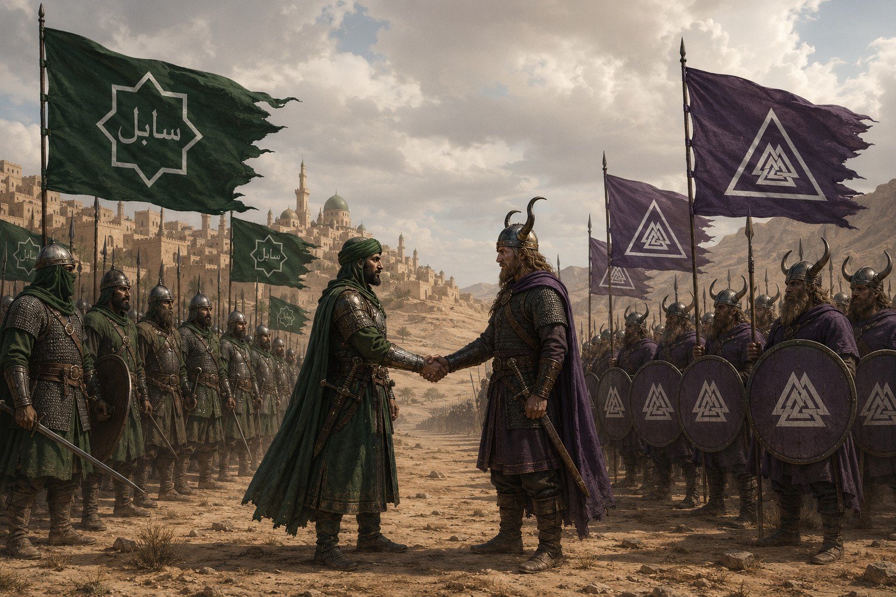
Les échanges de fourrures, métaux et bois contre épices, tissus et pierres rares rapprochèrent Asharun de Falkheim. Après de longues négociations, les deux nations promirent protection mutuelle des marchands, dialogue permanent et assistance en cas d’agression.
Des comptoirs relièrent le Sud aux ports du Nord. Érudits, artisans et guerriers étudièrent les savoirs de leurs alliés, transformant un accord commercial en relation culturelle et militaire durable.
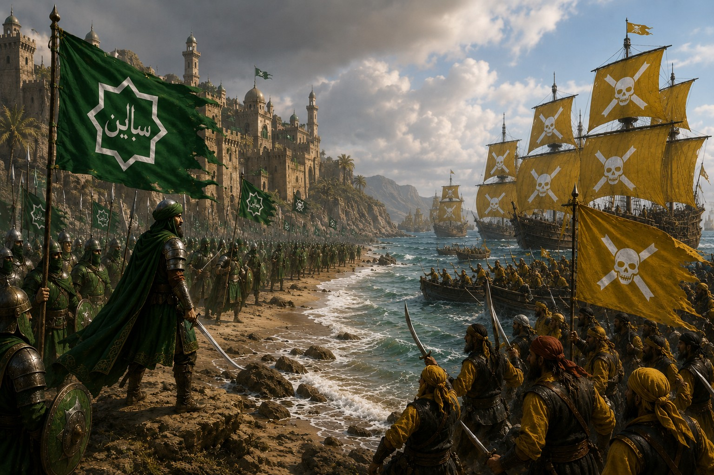
Des incidents maritimes et des rivalités commerciales conduisirent à un conflit ouvert. Les capitaines de Nerethis multiplièrent raids et attaques contre les convois, tandis qu’Asharun fortifiait ses côtes.
Falkheim resta neutre en raison d’un accord antérieur avec les pirates. Après des mois de pertes sans victoire décisive, Asharun et Nerethis acceptèrent un cessez-le-feu.
Une maladie apparue dans plusieurs oasis se propagea le long des routes commerciales. Quarantaines, fermetures de pistes et mobilisation des guérisseurs ne purent empêcher de nombreuses victimes.
Lorsque l’épidémie recula enfin, elle laissa derrière elle un peuple marqué et un commerce durablement fragilisé.
Poussé par les vents chauds, un incendie dévora étals, entrepôts et quartiers marchands. De nombreux commerçants perdirent leurs réserves et l’économie de la capitale fut paralysée pendant des semaines.
Sous Al-Fali, des artisans de tout Asharun élevèrent un marché plus vaste, plus sûr et mieux organisé. Larges allées, entrepôts et espaces caravaniers transformèrent les ruines en un ouvrage exemplaire.
L’inauguration réunit chefs tribaux et délégations étrangères. Les premières caravanes franchirent les portes sous les acclamations, consacrant la renaissance économique de la capitale.
L’évolution des intérêts politiques et commerciaux rendit l’alliance avec Falkheim difficile à maintenir. Les deux peuples choisirent pourtant une dissolution respectueuse, sans guerre ni crise majeure.
Les échanges subsistèrent et l’ancien pacte demeura dans les mémoires comme la preuve que des peuples lointains avaient su se comprendre.
Séismes, ruines oubliées, morts réveillés et guerres fratricides annoncent que le désert conserve des secrets plus anciens qu’Asharun.
Un violent séisme détruisit habitations, routes et oasis. Al-Talun mobilisa des caravanes de secours chargées d’eau, de nourriture et de matériel, tandis que les tribus voisines participaient aux sauvetages.
Cette solidarité permit au royaume de reconstruire ses infrastructures essentielles, mais les secousses avaient révélé quelque chose de bien plus inquiétant sous le sable.
Des ouvriers découvrirent d’anciennes ruines sous les décombres. Peu après le début des fouilles, des hordes de morts-vivants émergèrent et attaquèrent villages, caravanes et chantiers.
L’armée repoussa la menace après plusieurs semaines de combats. Les ruines furent placées sous surveillance, mais leur existence bouleversa déjà les certitudes des savants.
Les temples, inscriptions et objets retrouvés derrière les hordes mortes appartenaient à un peuple inconnu. L’Émir lança une vaste campagne de fouilles pour comprendre son histoire.
La découverte ouvrit une ère d’exploration archéologique et révéla que d’autres royaumes avaient prospéré puis disparu sous les mêmes dunes.
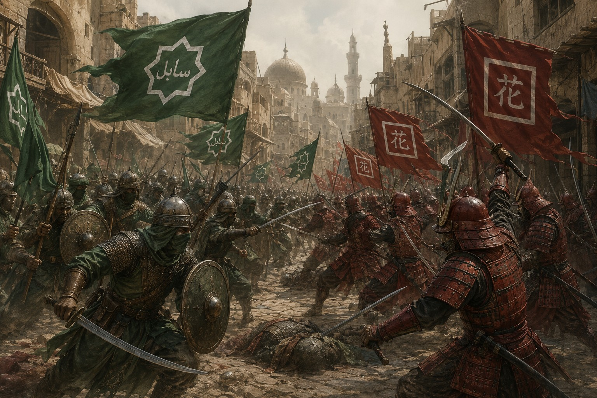
Les taxes maritimes et la rivalité pour les routes orientales empoisonnèrent l’ancienne Alliance du Lotus. Après un incident impliquant une flotte marchande, les garnisons furent renforcées et la guerre éclata dans une région disputée.
La discipline de Shintai se heurta à la mobilité asharienne. Les villes changèrent plusieurs fois de main et le commerce s’effondra, sans qu’aucun camp n’obtienne l’avantage.
Un traité fixa enfin les zones d’influence et rétablit progressivement les relations. La paix revint, mais l’amitié d’autrefois ne retrouva jamais tout à fait son innocence.
Marquées par leurs pertes, plusieurs tribus refusèrent le traité avec Shintai et accusèrent l’Émir d’avoir renoncé trop tôt. Elles rejetèrent son autorité et appelèrent à poursuivre la guerre.
La rébellion fut réprimée, mais elle laissa des divisions profondes au sein des clans qui avaient payé le prix du conflit.
Une créature de sable née, disait-on, d’une tempête magique, détruisait caravanes et villages. Farid al-Nasir mena cavaliers, chasseurs et mages sur ses traces à travers la Mer des Dunes Rouges.
Les mages affaiblirent son cœur, les cavaliers l’encerclèrent et l’Émir brisa son noyau avec sa lance sacrée. L’effondrement du colosse fut célébré dans tout le royaume.
Des années de sécheresse réduisirent les récoltes et asséchèrent les oasis. Al-Sharid ouvrit les greniers royaux et organisa des convois de ravitaillement, sans pouvoir empêcher l’exode de nombreuses tribus.
La faim fragilisa l’unité du royaume et attira bientôt le regard de puissances prêtes à exploiter sa faiblesse.
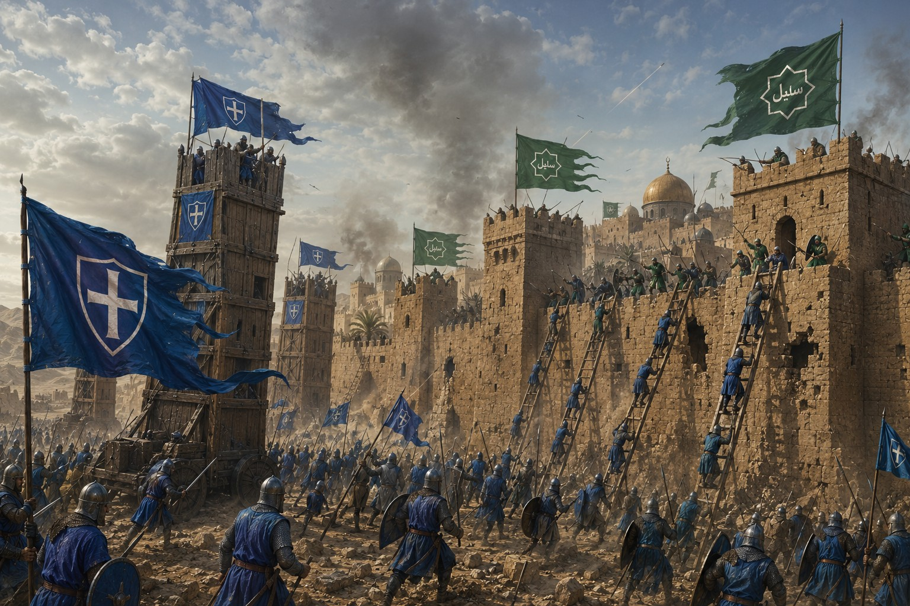
Vanloria soutint secrètement des clans mécontents avant d’envahir les frontières d’un Asharun affaibli. Ses chevaliers prirent plusieurs positions face à des garnisons privées de ressources.
À mesure que la campagne s’enfonçait dans le désert, les convois vanloriens devinrent vulnérables. Les cavaliers ashariens imposèrent une guerre d’usure qui arrêta l’offensive sans permettre de reprendre toutes les terres.
Épuisés, les deux royaumes cessèrent progressivement de combattre. Aucun traité, aucune victoire et aucune réconciliation ne vinrent résoudre le conflit.
Une force inconnue anima le désert. Des créatures capables de se reformer à partir du sable attaquèrent caravanes, villages et oasis.
Les armées finirent par disperser les hordes, tandis que les érudits échouaient à identifier la magie qui les avait créées. L’origine de l’invasion resta un mystère.
Les présages deviennent catastrophes. Nurazan, dernier bastion des dunes, affronte une force que ni la sagesse ni l’acier ne peuvent arrêter.
Des tempêtes se déplaçaient contre les vents, des lueurs erraient dans les dunes et des étoiles disparaissaient du ciel. Les puits les plus anciens s’asséchaient, les récoltes faiblissaient et une lumière violette recouvrait parfois l’horizon.
Dans les ruines, des inscriptions évoquaient une catastrophe semblable survenue dans un passé oublié. Les avertissements divisèrent davantage les tribus entre ferveur, peur et accusations. Le royaume poursuivait pourtant ses marchés comme s’il pouvait ignorer ce qui approchait.
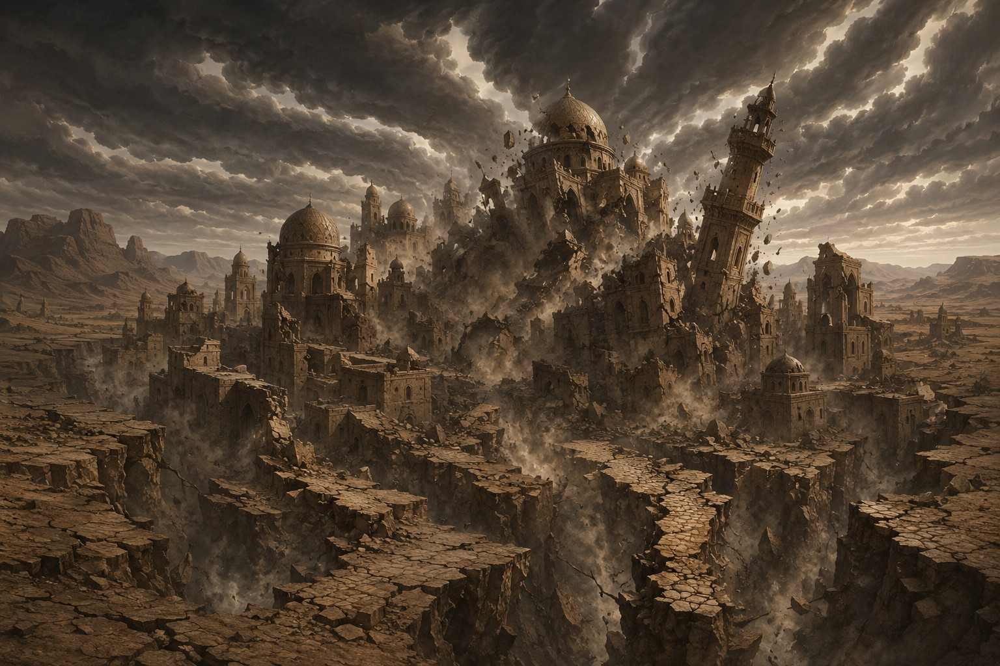
Les séismes frappèrent d’abord les frontières, puis avancèrent vers le cœur du royaume. Des failles engloutirent villes et routes tandis que des raz-de-marée détruisaient les ports et leurs flottes.
Des profondeurs émergèrent des créatures faites de flammes vivantes et d’énergie violette. Les garnisons, les gardes et les cavaliers combattirent toute la nuit, mais chaque nouvelle faille libérait d’autres monstres.
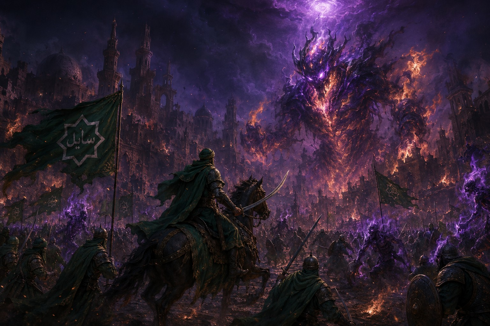
Des milliers de réfugiés se massèrent derrière les murailles. Archers, cavaliers, artisans, marchands et érudits défendirent les portes contre des vagues incessantes de créatures.
Au plus fort des combats, une immense faille s’ouvrit devant la capitale. Un colosse de feu et de magie violette, plus haut que les tours, s’éleva au-dessus du champ de bataille. Les défenseurs comprirent que leur véritable épreuve ne faisait que commencer.
Le dernier Émir Al-Zaria refusa de fuir. Il rassembla les derniers guerriers, chargea le colosse et poursuivit le combat jusqu’à se retrouver presque seul au milieu d’une capitale qui s’effondrait.
Blessé, il planta son arme dans le cœur lumineux de la créature. Une lumière aveuglante recouvrit les survivants tandis que les failles engloutissaient Nurazan, les flammes, les dunes et jusqu’au monstre lui-même.
Ainsi prit fin l’ancien Asharun. Le souvenir d’Al-Zaria demeura celui d’un souverain qui choisit d’affronter la fin plutôt que de s’y soumettre.
« Le désert peut engloutir nos cités. Il ne fera pas disparaître notre volonté. »
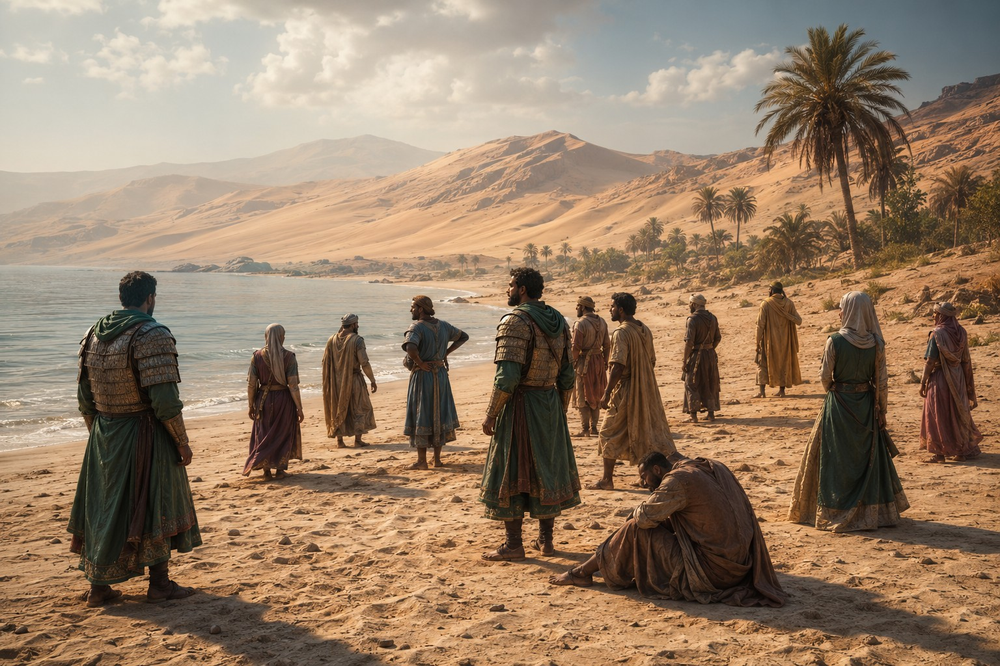
Le début d’un nouvel âge
Sur une plage inconnue, les survivants ont trouvé une mer calme, des forêts et des montagnes absentes de leurs cartes. Derrière eux demeure le souvenir d’une civilisation disparue. Devant eux s’ouvre une terre où la Souveraineté devra apprendre à renaître autrement.